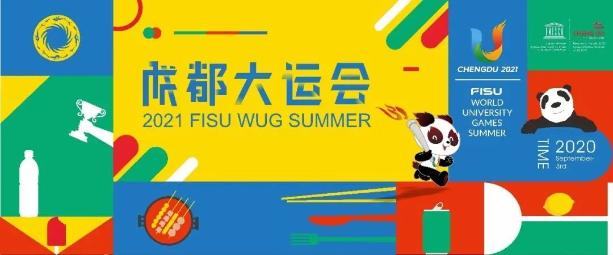
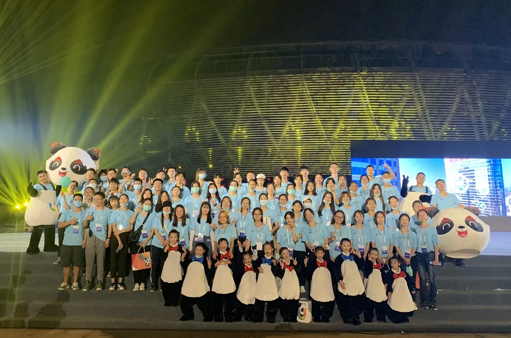

作为发展潜力巨大的新一线城市，成都成为了世界青年的向往，成都以海纳百川的城市胸怀，展示着“创新创造、优雅时尚、乐观包容、友善公益”的天府文化。而大运会的到来，使“梦想”成为了关键词，“在成都，成就每一个梦想”融入到成都的各个角落，无数梦想被希望和机遇照亮。
成都2021年第31届世界大学生夏季运动会
“这是中国大陆第3次举办世界大学生夏季运动会，是中国共产党成立100周年之际，‘全面建成小康社会’奋斗目标实现后举办的第1个世界综合性运动会；是新冠疫情后全球第1个青年交流盛会；是中国西部第1次举办的世界综合性运动会。”
志愿服务作为成都大运会的重要组成部分，已按照“早筹划、早行动、早组织、早培训、早演练”工作要求，拟定了5000名骨干志愿者、3万名赛会志愿者、50万名城市志愿者的规模。目前，我们正在招募大运会的城市志愿者。优秀的城市志愿者将入选为赛会志愿者乃至骨干志愿者。

城市志愿者火热招募中！
NO.1 我们是谁？
大运会城市志愿者是共青团成都市委按照市委、市政府“跳出赛事办大运”“依靠市民办大运”工作思路，着眼市民美好生活需要和城市永续发展，抢抓大运会办赛营城重大机遇，努力探索现代城市治理新路径、开创共建共治共享新局面而创新开发的志愿者类别。
NO.2 我们做什么?
在平时，大运会城市志愿者将围绕市民对志愿服务的需求，通过参与志愿服务活动，积极投身城乡社区发展治理公益实践行为，共建友好城市。赛事期间，他们将化身为城市志愿服务“代言人”，为赛会举办提供咨询服务、交通引导、场馆周边秩序维护等城市志愿服务，促进赛会的高效运转。
NO.3 怎么报名参与？
微信搜索“青聚锦官城”公众号，进入公众号后点击“大运志愿者”，点击“我要加入”，填写完信息提交后，即可成为一名光荣的大运会志愿者啦！

“一个城市未来最大的可能性，就是能承载所有人的梦想。”
如果你和我们一样有着共同的梦想，想主动融入成都新时代青年志愿者事业，想为国际盛会贡献青春力量，
那还不加入我们吗？
遇见成都，遇见更好的你！
如果你和我们一样有着共同的梦想，想主动融入成都新时代青年志愿者事业，想为国际盛会贡献青春力量，
那还不加入我们吗？
遇见成都，遇见更好的你！